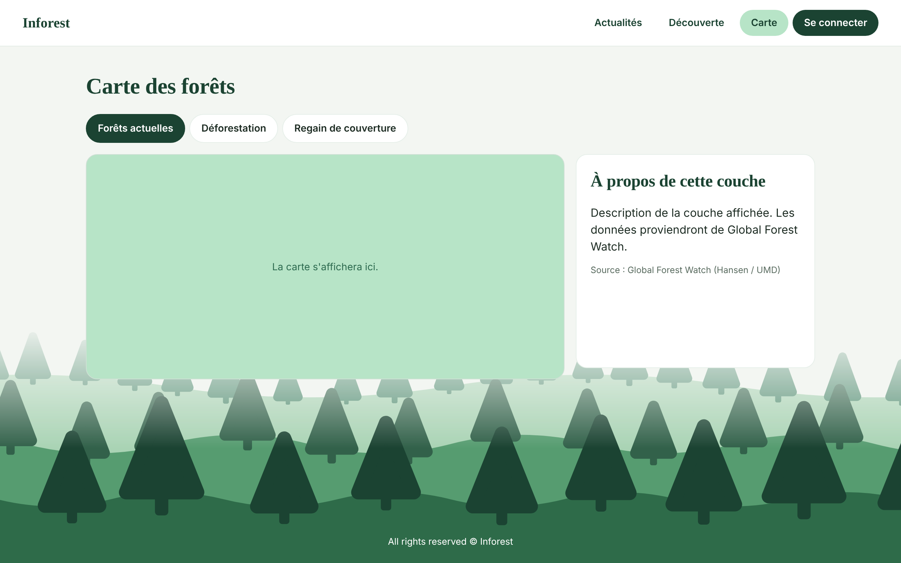
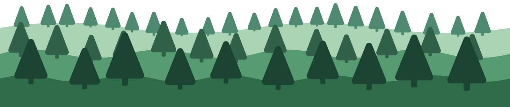
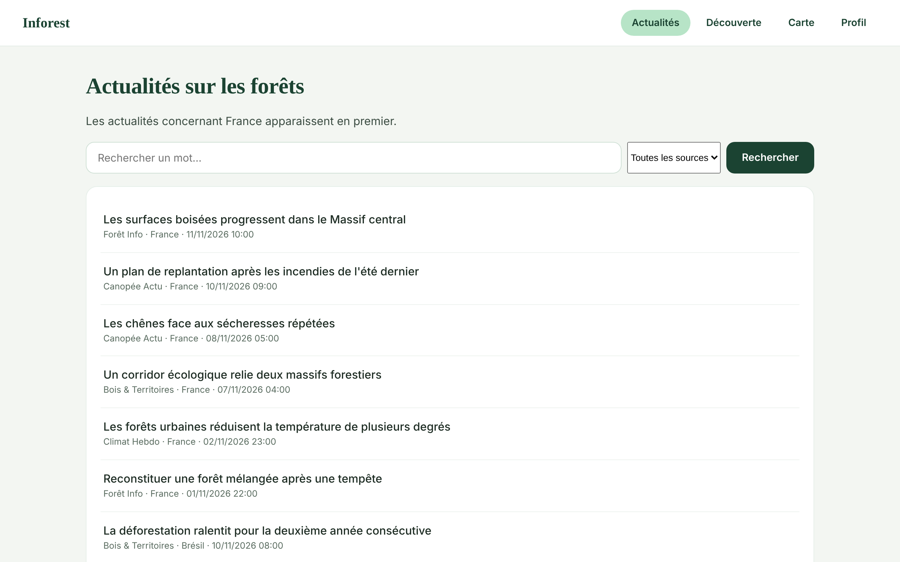
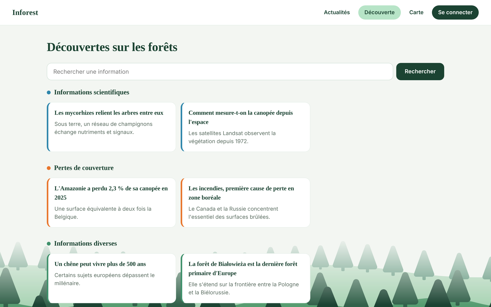
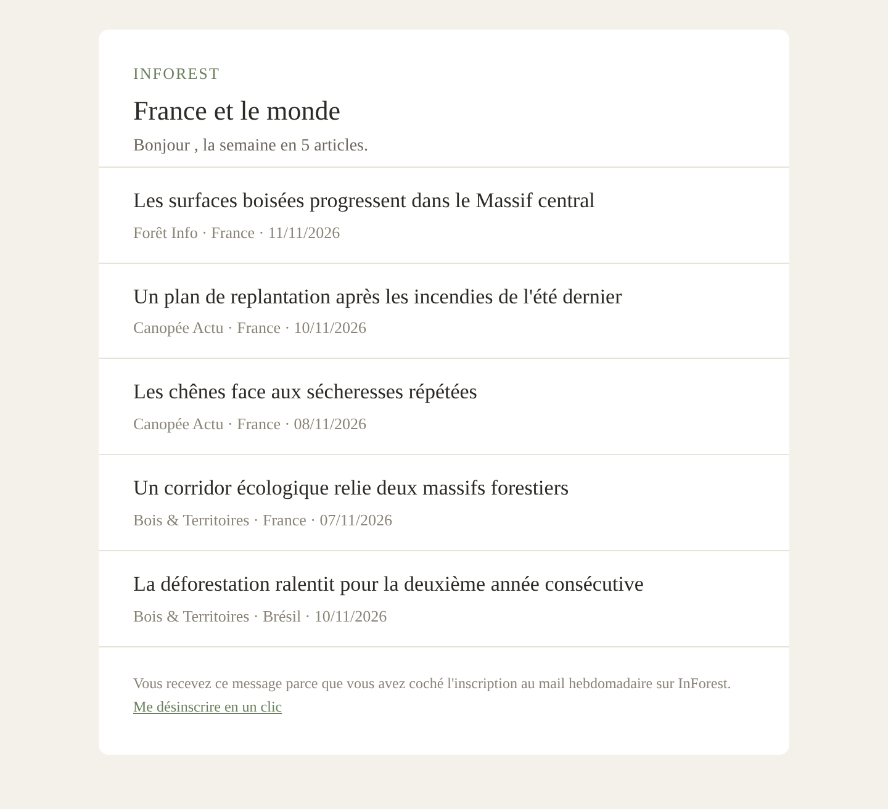

Une carte interactive des forêts
Trois couches de lecture permettent de voir où la forêt se maintient, où elle recule et où elle repousse. Les filtres de base sont ouverts à tous, les filtres avancés sont réservés aux membres.
Comprendre l'état des forêts dans le monde, en français, sans être expert.
Ouvrir l'application
Quatre fonctionnalités, pensées pour un public curieux mais non spécialiste.

Trois couches de lecture permettent de voir où la forêt se maintient, où elle recule et où elle repousse. Les filtres de base sont ouverts à tous, les filtres avancés sont réservés aux membres.

Les flux RSS de plusieurs médias sont collectés trois fois par jour. Les adresses sont nettoyées de leurs paramètres de suivi, les doublons supprimés grâce à une empreinte, et chaque article est rattaché à un pays. Un membre voit d'abord les actualités du pays qu'il suit.

Des contenus courts, à lire en une minute, répartis en trois catégories repérables à leur couleur : informations scientifiques, pertes de couverture et informations diverses. Une découverte est mise en avant chaque jour.

Chaque lundi à 8 h, une tâche planifiée envoie les actualités de la semaine, en commençant par celles du pays suivi. L'inscription est facultative, et chaque mail porte un lien de désinscription qui fonctionne en un clic, sans connexion, comme l'exige le RGPD.
Durant l'été 2026, j'ai suivi les incendies en France et dans le monde. J'ai voulu comprendre comment la forêt se portait, mais je n'ai trouvé aucun site francophone qui permette de suivre l'état des forêts dans le temps. J'ai donc décidé de créer Inforest, pour rassembler une carte interactive, un fil d'actualités et un mail hebdomadaire, en français. De plus, je pense que le role d'un developpeur est de s'interesser à des questions de société, d'écologie et d'environnement. C'est pourquoi j'ai choisi de travailler sur ce projet.
Ce que j'ai constaté en cherchant, en revanche, est facile à résumer. L'information sur les forêts existe, mais elle est difficile d'accès. Les grands sites de suivi sont en anglais et s'adressent à des chercheurs ou à des spécialistes de la donnée satellite. Dans les médias généralistes, à l'inverse, les incendies et la déforestation apparaissent de façon dispersée, sans aucun suivi dans le temps. Il manquait un endroit francophone où un lecteur curieux puisse comprendre, et surtout suivre.
Inforest est une application Django, servie par PostgreSQL, avec Celery et Redis pour les tâches planifiées, le tout conteneurisé avec Docker. La suite compte plus de cent trente tests. Les polices sont hébergées sur le site et aucune image distante n'est chargée, afin de ne transmettre l'adresse IP d'aucun visiteur à un tiers.
Ce projet est le projet de portfolio de fin de formation à Holberton School.
Inforest est un projet individuel, de la conception au déploiement.